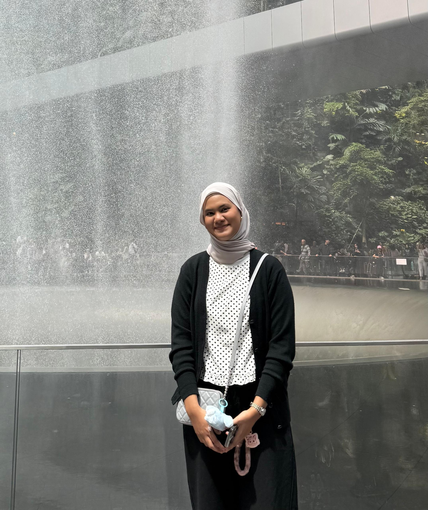

Information Technology Student @ Universiti Kebangsaan Malaysia. Bridging mobile development and game-based learning mechanics with the smart QuizEdu app. 🌸
Passive learning environments in traditional lecture halls often limit peer-to-peer interaction and student engagement. This gamified quiz ecosystem directly enhances collaborative learning and academic material retention.
Foundations of layout designs, composition frameworks, and architectural style mechanics using structural modifiers.
I learned how to build declarative user interface structures using fundamental Jetpack Compose building blocks such as Column, Row, and Box. I also grasped the mechanics of modifying UI aesthetics—such as paddings, background brushes, and typography—without relying on traditional XML layouts.
Event handling, interaction states, and reactive responses triggered directly by client runtimes.
This lab introduced me to the concept of State Management in Compose using remember and mutableStateOf. I successfully implemented reactive UI elements that dynamically respond to real-time user inputs, clicks, and state changes.
Theming implementations, uniform component styles, and dark/light mode context wrappers.
I explored the deployment of Material Design components and integrated a custom corporate color palette inspired by the university's corporate identity. I successfully built highly structured Card components, Floating Action Buttons, and handled both Light and Dark theme implementations.
Multi-screen destination routing configurations, screen backstack pipelines, and argument parsing rules.
In this macro exercise, I implemented a robust multi-screen navigation system using a centralized NavHost and NavController. I also mastered passing type-safe arguments—such as Game Room PINs—seamlessly from one destination screen to another.
Local SQLite structural persistence layers, entity abstraction models, and stream observers.
I acquired practical experience in offline data persistence using the Android Room SQLite abstraction library. I set up data structures via Entity definitions, managed secure CRUD operations via DAO interfaces, and safely observed historical data streams using Kotlin Flow.
I successfully merged custom Material 3 UI assets with an uninterrupted navigation lifecycle. Furthermore, I adapted my codebase to the MVVM (Model-View-ViewModel) architectural pattern, keeping the data logic cleanly decoupled from the UI layer for optimal scalability.
This project significantly escalated my core engineering capabilities. I effectively orchestrated Retrofit to asynchronously stream live questions from a Web API, configured Google's FusedLocationProviderClient to track physical device GPS hardware to verify student proximity, and constructed an immediate cloud-sync bridge that pushes local Room database entries straight to a remote Firebase Firestore Cloud cluster.
Kotlin
Jetpack Compose (Material Design 3)
MVVM Pattern, Repository Pattern, Coroutines & Kotlin Flow
Room Database (SQLite local storage)
Retrofit HTTP Client & Gson Converters
Google Play Services Location API (GPS tracking)
Google Firebase Firestore (NoSQL cloud syncing)
Leveraged through Retrofit to cleanly parse and download dynamic question pools asynchronously.
Used to extract real-time hardware location coordinate coordinates with high-accuracy parameters.
Deployed as the primary remote database engine to preserve cross-platform game room states.
An AI assistant (Gemini) was strategically engaged as a peer collaborator to refactor intricate Material 3 Compose components, address specific FilterChipDefaults compiler warnings, and assist in structuring the presentation script.